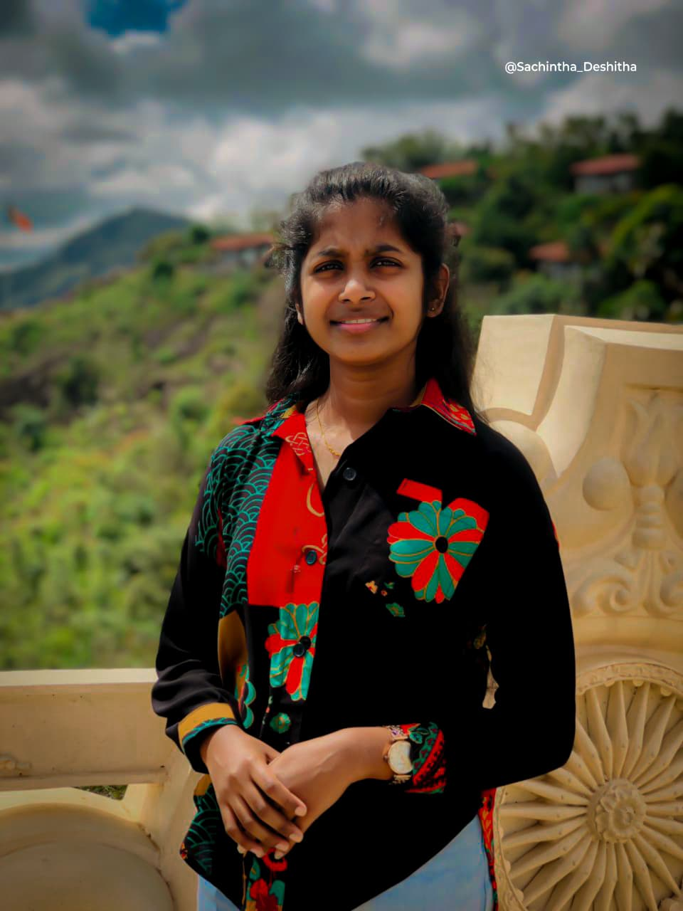
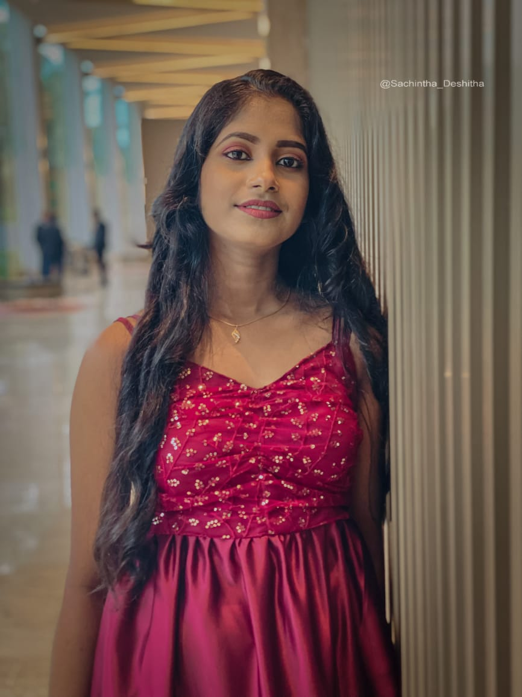

YASHODA GUNAWARDHANA
Hello, I'm
Yashoda Gunawardhana
a Full-Stack Developer
Resolving design problems, building smart user interfaces and useful interactions, developing rich web applications and seamless web experiences.
About Me
Hello! I'm Yashoda Gunawardhana, a 23-year-old passionate learner currently engaged in
higher education. I'm pursuing my studies in Software Engineering at IJSE Institute,
where I continuously expand my knowledge and skills in the field of technology.
I have a keen interest in solving problems, building smart user interfaces, and developing
efficient software solutions. My journey in software engineering is driven by curiosity
and a commitment to innovation. I am always excited to learn new technologies and take on
challenges that help me grow both personally and professionally.